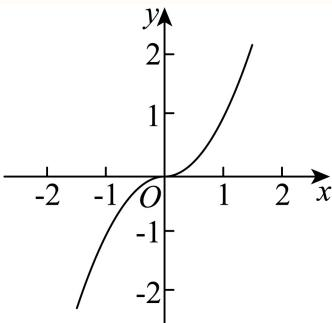
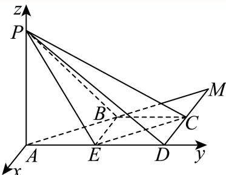
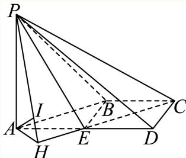

填空题 按本区原卷题号顺序排列。
徐汇 · 第1题 ★☆☆☆☆ · 教师预估 不等式 x 2 − 4 x + 3 < 0 x ^ { 2 } - 4 x + 3 < 0 x 2 − 4 x + 3 < 0
考点： 一元二次不等式因式分解。难度依据： 一元二次不等式因式分解；按所需步骤与推理量估计
核查说明： 题干与解析已用于人工归类，尚未完成整题公式校净与独立数学终审。
展开答案与解析 【解析】
由 x 2 − 4 x + 3 < 0 x ^ { 2 } - 4 x + 3 < 0 x 2 − 4 x + 3 < 0 ( x − 1 ) ( x − 3 ) < 0 ( x - 1 ) ( x - 3 ) < 0 ( x − 1 ) ( x − 3 ) < 0 1 < x < 3 1 < x < 3 1 < x < 3
徐汇 · 第2题 ★☆☆☆☆ · 教师预估 本题资料或解析有待核事项，预览不可作为已审定成品。
已知函数 y = f ( x ) y=f(x) y = f ( x ) f ( x ) = { ln x , x > 0 , − 1 , x ≤ 0 , f(x)=\begin{cases}\ln x,&x>0,\\-1,&x\le0,\end{cases} f ( x ) = { ln x , − 1 , x > 0 , x ≤ 0 , f ( 1 ) = f(1)= f ( 1 ) =
考点： 分段对数函数代值。难度依据： 分段对数函数代值；按所需步骤与推理量估计
核查说明： 题干与解析已用于人工归类，尚未完成整题公式校净与独立数学终审。；分段函数只识别到x>0一段；题干其余分支缺失，须回源。
展开答案与解析 【答案】0
【解析】
根据分段函数解析式求函数值.
由解析式知f(1) = ln 1 = 0.
故答案为：0
徐汇 · 第3题 ★☆☆☆☆ · 教师预估 在(1+x)n的二项展开式中，若各项系数和为32，则正整数n的值为 .
考点： 赋值求二项式系数和。难度依据： 赋值求二项式系数和；按所需步骤与推理量估计
核查说明： 题干与解析已用于人工归类，尚未完成整题公式校净与独立数学终审。
展开答案与解析 【答案】5.
【解析】
令x = 1，解出2n = 32即可.
因为 ( 1 + x ) n = C n 0 + C n 1 x + ⋯ + C n n x n ( 1 + x ) ^ { n } = \mathbf { C } _ { n } ^ { 0 } + \mathbf { C } _ { n } ^ { 1 } x + \cdots + \mathbf { C } _ { n } ^ { n } x ^ { n } ( 1 + x ) n = C n 0 + C n 1 x + ⋯ + C n n x n
令x = 1，则 2 n = C n 0 + C n 1 + ⋯ + C n n = 32 2 ^ { n } = \mathbf { C } _ { n } ^ { 0 } + \mathbf { C } _ { n } ^ { 1 } + \cdots + \mathbf { C } _ { n } ^ { n } = 3 2 2 n = C n 0 + C n 1 + ⋯ + C n n = 32
所以正整数 的值为5.
故答案为：5.
徐汇 · 第4题 ★☆☆☆☆ · 教师预估 已知向量 a ⃗ = ( 2 , 5 , 1 ) , b ⃗ = ( 4 , m , 5 ) \vec { a } = ( 2 , 5 , 1 ) , \vec { b } = ( 4 , m , 5 ) a = ( 2 , 5 , 1 ) , b = ( 4 , m , 5 ) a ⃗ ⋅ b ⃗ = 3 { \vec { a } } \cdot { \vec { b } } = 3 a ⋅ b = 3
考点： 空间向量数量积坐标运算。难度依据： 空间向量数量积坐标运算；按所需步骤与推理量估计
核查说明： 题干与解析已用于人工归类，尚未完成整题公式校净与独立数学终审。
展开答案与解析 【答案】−2
【解析】
利用空间向量的数量积的坐标运算公式即可求解.
因为 ȷ a ⃗ = ( 2 , 5 , 1 ) , b ⃗ = ( 4 , m , 5 ) \vec { \jmath _ { a } } = ( 2 , 5 , 1 ) , \vec { b } = ( 4 , m , 5 ) a = ( 2 , 5 , 1 ) , b = ( 4 , m , 5 ) ℓ a ⋅ b = 2 × 4 + 5 m + 1 × 5 = 5 m + 13 = 3. \begin{array} { r } { \ell { \stackrel { } { a } } \cdot { \stackrel { } { b } } = 2 \times 4 + 5 m + 1 \times 5 = 5 m + 1 3 = 3 . } \end{array} ℓ a ⋅ b = 2 × 4 + 5 m + 1 × 5 = 5 m + 13 = 3. m = − 2 \scriptstyle { m = - 2 } m = − 2
故答案为：−2
徐汇 · 第5题 ★★☆☆☆ · 教师预估 设 a , b ∈ R , f ( x ) = x 3 + 3 sin x + b . a , b \in \mathbf { R } , f \left( x \right) = x ^ { 3 } + 3 \sin x + b . a , b ∈ R , f ( x ) = x 3 + 3 sin x + b . y = f ( x ) y = f \left( x \right) y = f ( x ) [ − a , 2 a − 1 ] [ - a , 2 a - 1 ] [ − a , 2 a − 1 ] a + b = a + b = a + b =
考点： 奇函数定义域对称与函数值。难度依据： 奇函数定义域对称与函数值；按所需步骤与推理量估计
核查说明： 题干与解析已用于人工归类，尚未完成整题公式校净与独立数学终审。
展开答案与解析 【答案】1.
【解析】
利用奇函数的定义域关于原点对称，且满足 f ( − x ) + f ( x ) = 0 f \left( - x \right) + f \left( x \right) = 0 f ( − x ) + f ( x ) = 0 ⋅ y = f ( x ) \boldsymbol { \cdot } \boldsymbol { y } = \boldsymbol { f } \left( \boldsymbol { x } \right) ⋅ y = f ( x ) [ − a , 2 a − 1 ] [ - a , 2 a - 1 ] [ − a , 2 a − 1 ] ∣ f ( − x ) + f ( x ) = ( − x ) 3 + 3 sin ( − x ) + b + x 3 + 3 sin x + b = 2 b = 0 ⇒ b = 0 , \mid f \left( - x \right) + f \left( x \right) = \left( - x \right) ^ { 3 } + 3 \sin \left( - x \right) + b + x ^ { 3 } + 3 \sin x + b = 2 b = 0 \Rightarrow b = 0 , ∣ f ( − x ) + f ( x ) = ( − x ) 3 + 3 sin ( − x ) + b + x 3 + 3 sin x + b = 2 b = 0 ⇒ b = 0 ,
故答案为：1.
徐汇 · 第6题 ★★☆☆☆ · 教师预估 已知m,n为空间中两条不同的直线，α,β为两个不同的平面，若 m ⊂ α , α ∩ β = n m \subset \alpha , \alpha \cap \beta = n m ⊂ α , α ∩ β = n m / / n m / / n m // n m / / β m / / \beta m // β
考点： 线面平行判定与性质；充要条件。难度依据： 线面平行判定与性质；充要条件；按所需步骤与推理量估计
核查说明： 题干与解析已用于人工归类，尚未完成整题公式校净与独立数学终审。
展开答案与解析 【答案】充要.
【解析】
根据线面平行的判定定理和性质定理结合充分条件和必要条件的定义即可得解.
充分性：因为 m ⊂ α , α ∩ β = n , m / / n m \subset \alpha , \alpha \cap \beta = n , m / / n m ⊂ α , α ∩ β = n , m // n
所以m,n共面，
又因为α,β为两个不同的平面， n ⊂ β , n \subset \beta , n ⊂ β ,
所以 ∇ . m ⊄ β , \mathbf { \nabla } . m \not \subset \beta , ∇ . m ⊂ β ,
所以 . m / / β i . m / / \beta _ { \mathrm { i } } . m // β i
必要性：因为 m ⊂ α , α ∩ β = n m \subset \alpha , \alpha \cap \beta = n m ⊂ α , α ∩ β = n n ⊂ α \textstyle { \mathcal { n } } \subset \alpha n ⊂ α
又因为 ∣ m / / β , | m / / \beta , ∣ m // β , m / / n m / / n m // n
所以 m / / n m / / n m // n m / / m / / m //
故答案为：充要.
徐汇 · 第7题 ★☆☆☆☆ · 教师预估 本题资料或解析有待核事项，预览不可作为已审定成品。
某景点对30天内每天的游客人数（单位：万人）进行统计，得到样本的茎叶图（如下表），则该样本的第75百分位数是______。
茎
叶
1
2 5
2
0 2 3 3
3
1 2 4 4 8 9
4
5 5 5 7 7 8 8 9
5
0 0 1 1 4 7 9
6
1 7 8
考点： 茎叶图百分位数。难度依据： 茎叶图百分位数；按所需步骤与推理量估计
核查说明： 题干与解析已用于人工归类，尚未完成整题公式校净与独立数学终审。；茎叶图未呈现，无法凭底稿复核百分位数。
展开答案与解析 【答案】51.
【解析】
根据百分位数的定义求解即可.
因为30 × 75% = 22.5，
所以该样本的第75百分位数是按照从小到大的顺序排列的第23个数，即为51.
故答案为：51.
徐汇 · 第8题 ★★☆☆☆ · 教师预估 本题资料或解析有待核事项，预览不可作为已审定成品。
已知复数z1 和复数z2 满足 z 1 + z 2 = 3 + 4 i , z 1 ‾ − z 2 ‾ = − 2 + i z _ { 1 } + z _ { 2 } = 3 + 4 \mathbf { i } , \overline { { z _ { 1 } } } - \overline { { z _ { 2 } } } = - 2 + \mathbf { i } z 1 + z 2 = 3 + 4 i , z 1 − z 2 = − 2 + i 1 − z22 = .
考点： 共轭与平方差的模。难度依据： 共轭与平方差的模；按所需步骤与推理量估计
核查说明： 题干与解析已用于人工归类，尚未完成整题公式校净与独立数学终审。；题干目标的模号缺失，解析计算的是平方差的模，须回源。；原解将复数差与其共轭之差直接等同；该步一般不成立，须校对。
展开答案与解析 【答案】5 5 . 5 { \sqrt { 5 } } . 5 5 .
【解析】
× ∧ z 1 = a + b i , z 2 = c + d i , a , b , c , d ∈ R { \stackrel { \wedge } { \times } } z _ { 1 } = a + b \mathrm { i } , z _ { 2 } = c + d \mathrm { i } { \mathrm { ~ , ~ } } a , b , c , d \in \mathrm { R } × ∧ z 1 = a + b i , z 2 = c + d i , a , b , c , d ∈ R
z 1 − z 2 = z 1 ‾ − z 2 ‾ z _ { 1 } - z _ { 2 } = { \overline { { z _ { 1 } } } } - { \overline { { z _ { 2 } } } } z 1 − z 2 = z 1 − z 2 ∣ z 1 2 − z 2 2 ∣ \left| z _ { 1 } ^ { 2 } - z _ { 2 } ^ { 2 } \right| z 1 2 − z 2 2
设 z 1 = a + b i , z 2 = c + d i , a , b , c , d ∈ R , z _ { 1 } = a + b \mathrm { i } , z _ { 2 } = c + d \mathrm { i } , a , b , c , d \in \mathrm { R } , z 1 = a + b i , z 2 = c + d i , a , b , c , d ∈ R ,
则z − z = (a − c) + (b − d)i, z − z = (a − bi) − (c − di) = (a − c) − (b − d)i，–
所以 z 1 − z 2 = z 1 ‾ − z 2 ‾ , \begin{array} { r } { \left. z _ { 1 } - z _ { 2 } = \overline { { z _ { 1 } } } - \overline { { z _ { 2 } } } , \right. } \end{array} z 1 − z 2 = z 1 − z 2 ,
因为 z 1 + z 2 = 3 + 4 i , z 1 ‾ − z 2 ‾ = − 2 + i , z _ { 1 } + z _ { 2 } = 3 + 4 \mathrm { i } , \overline { { z _ { 1 } } } - \overline { { z _ { 2 } } } = - 2 + \mathrm { i } , z 1 + z 2 = 3 + 4 i , z 1 − z 2 = − 2 + i ,
所以z2 − z2 = (z1 + z2 ) (z1 − z2 ) = (3 + 4i) (−2 − i) = −6 − 3i − 8i − 4i2 = −2 − 11i，
则 z2 − z2 = |−2 − 11i| = √(−2)2 + (−11)2 = 5√5.
故答案为： 5 5 . 5 { \sqrt { 5 } } . 5 5 .
徐汇 · 第9题 ★★★☆☆ · 教师预估 本题资料或解析有待核事项，预览不可作为已审定成品。
设 a ∈ R , f ( x ) = x 2 + a x + ln x a \in \mathbf { R } , f \left( x \right) = x ^ { 2 } + a x + \ln x a ∈ R , f ( x ) = x 2 + a x + ln x
考点： 导数零点与极值点个数。难度依据： 导数零点与极值点个数；按所需步骤与推理量估计
核查说明： 题干与解析已用于人工归类，尚未完成整题公式校净与独立数学终审。；原解称正半轴内有两个异号零点，且导数表达、二次式顶点有误识或错误，须回核。
展开答案与解析 【答案】( − ∞ , − 2 2 ) \left( - \infty , - 2 { \sqrt { 2 } } \right) ( − ∞ , − 2 2 )
【解析】
函数y = f(x)存在两个不同的极值点等价于y = f′ (x)在(0,+∞)内有两个异号零点，进而转化 为 f ′ ( x ) = 0 / E ( 0 , + ∞ ) f ^ { \prime } \left( x \right) = 0 / \mathbb { E } ( 0 , + \infty ) f ′ ( x ) = 0/ E ( 0 , + ∞ )
解：易知函数 f ( x ) = x 2 + a x + ln x f \left( x \right) = x ^ { 2 } + a x + \ln x f ( x ) = x 2 + a x + ln x ( 0 , + ∞ ) ( 0 , + \infty ) ( 0 , + ∞ )
f′ (x) = 2x + a + 1 2x2 + ax + 1 ，
因为函数 y = f ( x ) y = f \left( x \right) y = f ( x )
所以 f ′ ( x ) = 0 / ± ^ ( 0 , + ∞ ) { f ^ { \prime } } \left( x \right) = 0 / { \widehat { \pm } } ( 0 , + \infty ) f ′ ( x ) = 0/ ± ( 0 , + ∞ )
设 z g ( x ) = 2 x 2 + a x + 1 , x ∈ ( 0 , + ∞ ) z _ { g } \left( x \right) = 2 x ^ { 2 } + a x + 1 , \ x \in \left( 0 , + \infty \right) z g ( x ) = 2 x 2 + a x + 1 , x ∈ ( 0 , + ∞ )
则只需 { g ( 0 ) > 0 Δ > 0 − a 2 > 0 \left\{ { \begin{array} { l } { g ( 0 ) > 0 } \\ { \Delta > 0 } \\ { - { \cfrac { a } { 2 } } > 0 } \end{array} } \right. ⎩ ⎨ ⎧ g ( 0 ) > 0 Δ > 0 − 2 a > 0 { a 2 − 8 > 0 \left\{ { { a ^ { 2 } } - 8 > 0 } \right. { a 2 − 8 > 0
所以 a < − 2 2 a < - 2 { \sqrt { 2 } } a < − 2 2 ( − ∞ , − 2 2 ) \left( - \infty , - 2 { \sqrt { 2 } } \right) ( − ∞ , − 2 2 )
故答案为： ( − ∞ , − 2 2 ) \left( - \infty , - 2 { \sqrt { 2 } } \right) ( − ∞ , − 2 2 )
徐汇 · 第10题 ★★★☆☆ · 教师预估 已知椭圆 x 2 a 2 + y 2 b 2 = 1 ( a > b > 0 ) { \frac { x ^ { 2 } } { a ^ { 2 } } } + { \frac { y ^ { 2 } } { b ^ { 2 } } } = 1 ( a > b > 0 ) a 2 x 2 + b 2 y 2 = 1 ( a > b > 0 ) F 1 , F 2 F _ { 1 } , F _ { 2 } F 1 , F 2 ∠ P F 2 F 1 = π 3 \angle P F _ { 2 } F _ { 1 } = \frac { \pi } { 3 } ∠ P F 2 F 1 = 3 π 3 − 1 { \sqrt { 3 } } - 1 3 − 1 ∠ P F 1 F 2 \angle P F _ { 1 } F _ { 2 } ∠ P F 1 F 2
考点： 椭圆焦点三角形；正余弦定理。难度依据： 椭圆焦点三角形；正余弦定理；按所需步骤与推理量估计
核查说明： 题干与解析已用于人工归类，尚未完成整题公式校净与独立数学终审。
展开答案与解析 【答案】π 6 . { \frac { \pi } { 6 } } . 6 π .
【解析】
设 ∣ P F 2 ∣ = x | P F _ { 2 } | = x ∣ P F 2 ∣ = x ∣ P F 1 ∣ = 2 a − x | P F _ { 1 } | = 2 a - x ∣ P F 1 ∣ = 2 a − x x = ( 3 − 1 ) a x = { \bigg ( } { \sqrt { 3 } } - 1 { \bigg ) } a x = ( 3 − 1 ) a sin ∠ P F 1 F 2 = 1 2 \sin \angle P F _ { 1 } F _ { 2 } = \frac { 1 } { 2 } sin ∠ P F 1 F 2 = 2 1 ∠ P F 1 F 2 \angle P F _ { 1 } F _ { 2 } ∠ P F 1 F 2
如图，设 P F 2 ∣ = x , P F _ { 2 } | = x , P F 2 ∣ = x , P F 1 ∣ = 2 a − x P F _ { 1 } | = 2 a - x P F 1 ∣ = 2 a − x e = c a = 3 − 1 e = { \frac { c } { a } } = { \sqrt { 3 } } - 1 e = a c = 3 − 1 c ˙ = ( 3 − 1 ) a \dot { \boldsymbol { c } } = \bigg ( \sqrt { 3 } - 1 \bigg ) \boldsymbol { a } c ˙ = ( 3 − 1 ) a
由余弦定理， ∣ P F 1 ∣ 2 = ∣ P F 2 ∣ 2 + ∣ F 1 F 2 ∣ 2 − 2 ∣ P F 2 ∣ ⋅ ∣ F 1 F 2 ∣ cos π 3 , | P F _ { 1 } | ^ { 2 } = | P F _ { 2 } | ^ { 2 } + | F _ { 1 } F _ { 2 } | ^ { 2 } - 2 | P F _ { 2 } | \cdot | F _ { 1 } F _ { 2 } | \cos { \frac { \pi } { 3 } } , ∣ P F 1 ∣ 2 = ∣ P F 2 ∣ 2 + ∣ F 1 F 2 ∣ 2 − 2∣ P F 2 ∣ ⋅ ∣ F 1 F 2 ∣ cos 3 π ,
即 ( 2 a − x ) 2 = 4 c 2 + x 2 − 2 c x ( 2 a - x ) ^ { 2 } = 4 c ^ { 2 } + x ^ { 2 } - 2 c x ( 2 a − x ) 2 = 4 c 2 + x 2 − 2 c x
将 c ˙ = ( 3 − 1 ) a \dot { \boldsymbol { c } } = \bigg ( \sqrt { 3 } - 1 \bigg ) \boldsymbol { a } c ˙ = ( 3 − 1 ) a 4 a 2 − 4 a x + x 2 = 4 ( 4 − 2 3 ) a 2 + x 2 − 2 ( 3 − 1 ) a x 4 a ^ { 2 } - 4 a x + x ^ { 2 } = 4 { \Big ( } 4 - 2 { \sqrt { 3 } } { \Big ) } a ^ { 2 } + x ^ { 2 } - 2 { \Big ( } { \sqrt { 3 } } - 1 { \Big ) } a x 4 a 2 − 4 a x + x 2 = 4 ( 4 − 2 3 ) a 2 + x 2 − 2 ( 3 − 1 ) a x
解得 x = 4 3 − 6 3 − 3 a = ( 3 − 1 ) a x = { \frac { 4 { \sqrt { 3 } } - 6 } { 3 - { \sqrt { 3 } } } } a = \left( { \sqrt { 3 } } - 1 \right) a x = 3 − 3 4 3 − 6 a = ( 3 − 1 ) a ∣ P F 2 ∣ = ( 3 − 1 ) a , ∣ P F 1 ∣ = ( 3 − 3 ) a , | P F _ { 2 } | = \Big ( \sqrt { 3 } - 1 \Big ) a , | P F _ { 1 } | = \Big ( 3 - \sqrt { 3 } \Big ) a , ∣ P F 2 ∣ = ( 3 − 1 ) a , ∣ P F 1 ∣ = ( 3 − 3 ) a ,
由正弦定理： ∣ P F 2 ∣ sin ∠ P F 1 F 2 = ∣ P F 1 ∣ sin π 3 { \frac { \left| P F _ { 2 } \right| } { \sin \angle P F _ { 1 } F _ { 2 } } } = { \frac { \left| P F _ { 1 } \right| } { \sin { \frac { \pi } { 3 } } } } s i n ∠ P F 1 F 2 ∣ P F 2 ∣ = s i n 3 π ∣ P F 1 ∣ ( 3 − 1 ) a sin ∠ P F 1 F 2 = ( 3 − 3 ) a 3 2 { \frac { \left( { \sqrt { 3 } } - 1 \right) a } { \sin \angle P F _ { 1 } F _ { 2 } } } = { \frac { \left( 3 - { \sqrt { 3 } } \right) a } { \frac { \sqrt { 3 } } { 2 } } } s i n ∠ P F 1 F 2 ( 3 − 1 ) a = 2 3 ( 3 − 3 ) a
解得 sin ∠ P F 1 F 2 = 1 2 \sin \angle P F _ { 1 } F _ { 2 } = \frac { 1 } { 2 } sin ∠ P F 1 F 2 = 2 1
因0 < ∠ P F 1 F 2 < 2 π 3 < \angle P F _ { 1 } F _ { 2 } < \frac { 2 \pi } { 3 } < ∠ P F 1 F 2 < 3 2 π ∠ P F 1 F 2 = π 6 \angle P F _ { 1 } F _ { 2 } = \frac { \pi } { 6 } ∠ P F 1 F 2 = 6 π
故答案为： π 6 . { \frac { \pi } { 6 } } . 6 π .
徐汇 · 第11题 ★★★☆☆ · 教师预估 本题资料或解析有待核事项，预览不可作为已审定成品。
徐汇滨江作为2024年上海国际鲜花展的三个主会场之一，吸引了广大市民前往观展并拍照留念.图中的花盆是种植鲜花的常见容器，它可视作两个圆台的组合体，上面圆台的上､下底面直径分别为
考点： 圆台展开扇形与母线。难度依据： 圆台展开扇形与母线；按所需步骤与推理量估计
核查说明： 题干与解析已用于人工归类，尚未完成整题公式校净与独立数学终审。；源解末行母线长度之和与前文数值不一致，需核原解和题图。
展开答案与解析 【答案】5 17 5 \sqrt { 1 7 } 5 17
【解析】
设出圆台的母线长及底面半径，根据圆台的母线长公式 l = h 2 + ( r 1 − r 2 ) 2 l = \sqrt { h ^ { 2 } + \left( r _ { 1 } - r _ { 2 } \right) ^ { 2 } } l = h 2 + ( r 1 − r 2 ) 2
设上面圆台的母线长为 ∣ l 1 \boldsymbol { \lvert l _ { 1 } } ∣ l 1 1 r 1 = 15 c m 1 r _ { 1 } = 1 5 \mathrm { c m } 1 r 1 = 15 cm r 2 = 13 c m r _ { 2 } = 1 3 \mathrm { c m } r 2 = 13 cm h = 8 c m h = 8 \mathrm { c m } h = 8 cm
根据圆台的母线长公式l = h 2 + ( r 1 − r 2 ) 2 \sqrt { h ^ { 2 } + ( r _ { 1 } - r _ { 2 } ) ^ { 2 } } h 2 + ( r 1 − r 2 ) 2
l 1 = 8 2 + ( 15 − 13 ) 2 = 68 = 2 17 c m ;
l _ {1} = \sqrt {8 ^ {2} + (1 5 - 1 3) ^ {2}} = \sqrt {6 8} = 2 \sqrt {1 7} \mathrm{cm};
l 1 = 8 2 + ( 15 − 13 ) 2 = 68 = 2 17 cm ;
设下面圆台的母线长为l ，上面半径为 r 3 = 12 c m . r _ { 3 } = 1 2 \mathrm { { c m } } . r 3 = 12 cm . r 4 = 9 c m r _ { 4 } = 9 \mathrm { c m } r 4 = 9 cm
由于两个圆台侧面展开图的圆弧所对的圆心角相等，可以得到 r 1 − r 2 l 1 = r 3 − r 4 l 2 \frac { r _ { 1 } - r _ { 2 } } { l _ { 1 } } = \frac { r _ { 3 } - r _ { 4 } } { l _ { 2 } } l 1 r 1 − r 2 = l 2 r 3 − r 4
计算得到 ∣ l 2 = ( r 3 − r 4 ) l 1 r 1 − r 2 = ( 12 − 9 ) × 2 17 15 − 13 = 3 17 c m | l _ { 2 } = { \frac { ( r _ { 3 } - r _ { 4 } ) l _ { 1 } } { r _ { 1 } - r _ { 2 } } } = { \frac { ( 1 2 - 9 ) \times 2 { \sqrt { 1 7 } } } { 1 5 - 1 3 } } = 3 { \sqrt { 1 7 } } \mathrm { c m } ∣ l 2 = r 1 − r 2 ( r 3 − r 4 ) l 1 = 15 − 13 ( 12 − 9 ) × 2 17 = 3 17 cm
所以该花盆上､下两部分母线长的总和为 12 17 + 3 17 = 5 17 c m \scriptstyle 1 2 { \sqrt { 1 7 } } + 3 { \sqrt { 1 7 } } = 5 { \sqrt { 1 7 } } { \mathrm { c m } } 12 17 + 3 17 = 5 17 cm
故答案为： 5 17 5 \sqrt { 1 7 } 5 17
徐汇 · 第12题 ★★★★★ · 教师预估 本题资料或解析有待核事项，预览不可作为已审定成品。
已知定义域为A = {1,2,3}的函数 ⋅ y = f ( x ) \cdot y = f \left( x \right) ⋅ y = f ( x ) y = f ( x ) y = f \left( x \right) y = f ( x ) C ⊆ B C \subseteq B C ⊆ B C ‾ \overline{C} C
考点： 有限集合与函数复合；函数复合计数。难度依据： 需要理解复合与有限集合约束并分情形构造；题干符号待核，评级暂定。
核查说明： 已恢复缺失部分，但题干仍有OCR乱码，须校净后才能发布。；题干与解析已用于人工归类，尚未完成整题公式校净与独立数学终审。；题干C与补集的区别在解析中严重丢失，按底稿字面恒等函数构成单元素集合已满足，源答案2不适用于该字面题意；须回源确认定义。
展开答案与解析 【答案】2.
【解析】
根据题意可得集合B有6个不同的元素，且非空集合 C ⊆ B , C ‾ ⊆ B H C ‾ ∪ C = B C \subseteq B , \ { \overline { { C } } } \subseteq B \mathbb { H } { \overline { { C } } } \cup C = B C ⊆ B , C ⊆ B H C ∪ C = B
因为定义域为 A = { 1 , 2 , 3 } A = \{ 1 , 2 , 3 \} A = { 1 , 2 , 3 } ⋅ y = f ( x ) \boldsymbol { \cdot } \boldsymbol { y } = \boldsymbol { f } \left( \boldsymbol { x } \right) ⋅ y = f ( x )
所以这样的不同的函数有 A 3 3 = 6 ↑ \mathrm { A _ { 3 } ^ { 3 } } = 6 \mathrm { \uparrow } A 3 3 = 6 ↑
又非空集合 ⋅ C ⊆ B , C ‾ ⊆ B H C ‾ ∪ C = B , \cdot C \subseteq B , \ { \overline { { C } } } \subseteq B \mathbb { H } { \overline { { C } } } \cup C = B , ⋅ C ⊆ B , C ⊆ B H C ∪ C = B ,
又C中的每一个函数都是C中的两个函数（可以相同）的复合函数，–
若C中只有1个函数，则 ∣ C ‾ ∣ | \overline { { C } } | ∣ C ∣
又C中函数与自身的复合函数只能表示一个函数，故不能得到 ∣ C ‾ ∣ | \overline { { C } } | ∣ C ∣
若C中只有2个函数，则C中有4个函数，–
若C中2个函数的复合函数有 2 × 2 = 4 2 \times 2 = 4 2 × 2 = 4 –
需验证即可.
6个不同函数为 f 1 ( x ) : 1 → 1 , 2 → 2 , 3 → 3 , f 2 ( x ) : 1 → 1 , 2 → 3 , 3 → 2 f _ { 1 } ( x ) \colon 1 \to 1 , 2 \to 2 , 3 \to 3 , f _ { 2 } ( x ) \colon 1 \to 1 , 2 \to 3 , 3 \to 2 f 1 ( x ) : 1 → 1 , 2 → 2 , 3 → 3 , f 2 ( x ) : 1 → 1 , 2 → 3 , 3 → 2
f 3 ( x ) : 1 → 2 , 2 → 1 , 3 → 3 , f 4 ( x ) : 1 → 2 , 2 → 3 , 3 → 1 ,
f _ {3} (x): 1 \rightarrow 2, 2 \rightarrow 1, 3 \rightarrow 3, f _ {4} (x): 1 \rightarrow 2, 2 \rightarrow 3, 3 \rightarrow 1,
f 3 ( x ) : 1 → 2 , 2 → 1 , 3 → 3 , f 4 ( x ) : 1 → 2 , 2 → 3 , 3 → 1 ,
f5 (x): 1 → 3, 2 → 1, 3 → 2， f 6 ( x ) : 1 → 3 , 2 → 2 , 3 → 1 f _ { 6 } ( x ) \colon 1 \to 3 , 2 \to 2 , 3 \to 1 f 6 ( x ) : 1 → 3 , 2 → 2 , 3 → 1
若 C = { f 4 ( x ) , f 6 ( x ) } C = \{ f _ { 4 } ( x ) , f _ { 6 } ( x ) \} C = { f 4 ( x ) , f 6 ( x )} F C ‾ = { f 1 ( x ) , f 2 ( x ) , f 3 ( x ) , f 5 ( x ) } \mathsf { F } \overline { { C } } = \{ f _ { 1 } ( x ) , f _ { 2 } ( x ) , f _ { 3 } ( x ) , f _ { 5 } ( x ) \} F C = { f 1 ( x ) , f 2 ( x ) , f 3 ( x ) , f 5 ( x )}
f 6 ( f 6 ( x ) ) = f 1 ( x ) , f 4 ( f 6 ( x ) ) = f 2 ( x ) ,
f _ {6} (f _ {6} (x)) = f _ {1} (x), \quad f _ {4} (f _ {6} (x)) = f _ {2} (x),
f 6 ( f 6 ( x )) = f 1 ( x ) , f 4 ( f 6 ( x )) = f 2 ( x ) ,
f 6 ( f 4 ( x ) ) = f 3 ( x ) , f 4 ( f 4 ( x ) ) = f 5 ( x ) ,
f _ {6} (f _ {4} (x)) = f _ {3} (x), \quad f _ {4} (f _ {4} (x)) = f _ {5} (x),
f 6 ( f 4 ( x )) = f 3 ( x ) , f 4 ( f 4 ( x )) = f 5 ( x ) ,
所以集合C的元素个数的最小值为2.
故答案为：2.
方法点睛：利用已知先确定集合B有6个不同的元素，按照C中函数是C中函数的复合函数，找到两集合元素的关系，验证即可.
二、选择题
选择题 按本区原卷题号顺序排列。
徐汇 · 第13题 ★☆☆☆☆ · 教师预估 下列抛物线中，焦点坐标为 ( 0 , 1 8 ) \left( 0 , { \frac { 1 } { 8 } } \right) ( 0 , 8 1 )
A. y 2 = 1 2 x y ^ { 2 } = { \frac { 1 } { 2 } } x y 2 = 2 1 x
B. y 2 = 1 4 x y ^ { 2 } = { \frac { 1 } { 4 } } x y 2 = 4 1 x
C. x 2 = 1 2 y x ^ { 2 } = { \frac { 1 } { 2 } } y x 2 = 2 1 y
D. x 2 = 1 4 y x ^ { 2 } = { \frac { 1 } { 4 } } y x 2 = 4 1 y
考点： 抛物线焦点与标准方程。难度依据： 抛物线焦点与标准方程；按所需步骤与推理量估计
核查说明： 题干与解析已用于人工归类，尚未完成整题公式校净与独立数学终审。
展开答案与解析 【答案】C
【解析】
故选：C.
抛物线的标准方程为: x 2 = 2 p y x ^ { 2 } = 2 p y x 2 = 2 p y ( 0 , p 2 ) \left( 0 , { \frac { p } { 2 } } \right) ( 0 , 2 p ) p 2 = 1 8 { \frac { p } { 2 } } = { \frac { 1 } { 8 } } 2 p = 8 1 p = 1 4 p = \frac 1 4 p = 4 1 x 2 = 1 2 y x ^ { 2 } = { \frac { 1 } { 2 } } y x 2 = 2 1 y
徐汇 · 第14题 ★☆☆☆☆ · 教师预估 一个不透明的盒子中装有若干个红球和5个黑球，这些球除颜色外均相同.每次将球充分搅匀后，任意摸出1个球记下颜色后再放回盒子.经过重复摸球足够多次试验后发现，摸到黑球的频率稳定在0.1左右，则据此估计盒子中红球的个数约为（ ）
A. 40个
B. 45个
C. 50个
D. 55个
考点： 频率估计概率与古典概型。难度依据： 频率估计概率与古典概型；按所需步骤与推理量估计
核查说明： 题干与解析已用于人工归类，尚未完成整题公式校净与独立数学终审。
展开答案与解析 【答案】B
【解析】
因为重复摸球次数足够多，所以将频率视为概率，应用古典概型概率的计算公式计算即可.设红球个数为a，
由题意可得： 5 a + 5 = 0.1 \frac { 5 } { a + 5 } = 0 . 1 a + 5 5 = 0.1
故选：B
徐汇 · 第15题 ★★★☆☆ · 教师预估 已知函数 y = f ( x ) y=f(x) y = f ( x ) y = f ′ ( x ) y=f'(x) y = f ′ ( x ) R \mathbf R R y = f ( x ) y=f(x) y = f ( x ) y = f ′ ( x ) y=f'(x) y = f ′ ( x ) ( − ∞ , 0 ) (-\infty,0) ( − ∞ , 0 ) y = f ( x ) y=f(x) y = f ( x )
A.
x x x 1
2
3
4
f ( x ) f(x) f ( x ) 2.8188
1.0000
0.3644
0.2468
B.
x x x 1
2
3
4
f ( x ) f(x) f ( x ) 0.7580
1.0000
1.3188
1.7979
C.
x x x 1
2
3
4
f ( x ) f(x) f ( x ) 2.4132
1.0000
1.5885
4.1116
D.
x x x 1
2
3
4
f ( x ) f(x) f ( x ) 0.8664
1.0000
1.1188
1.2240
考点： 偶函数导数与数据变化率。难度依据： 偶函数导数与数据变化率；按所需步骤与推理量估计
核查说明： 题干与解析已用于人工归类，尚未完成整题公式校净与独立数学终审。
展开答案与解析 【答案】B
【解析】
利用导函数的奇偶性和单调性以及正负取值，去分析原函数，即可得到判断函数 y = f ( x ) y = f \left( x \right) y = f ( x ) f ( − x ) = f ( x ) f \left( - x \right) = f \left( x \right) f ( − x ) = f ( x ) − f ′ ( − x ) = f ′ ( x ) - f ^ { \prime } \left( - x \right) = f ^ { \prime } \left( x \right) − f ′ ( − x ) = f ′ ( x ) y = f ′ ( x ) y = f ^ { \prime } \left( x \right) y = f ′ ( x )
由于函数 y = f ( x ) ⊥ y = f \left( x \right) ^ { \perp } y = f ( x ) ⊥ y = f ′ ( x ) y = f ^ { \prime } \left( x \right) y = f ′ ( x )
所以 y = f ′ ( 0 ) = 0 y = f ^ { \prime } \left( 0 \right) = 0 y = f ′ ( 0 ) = 0 y = f ′ ( x ) y = f ^ { \prime } \left( x \right) y = f ′ ( x ) ( − ∞ , 0 ) ( - \infty , 0 ) ( − ∞ , 0 )
所以 y = f ′ ( x ) y = f ^ { \prime } \left( x \right) y = f ′ ( x ) ( 0 , + ∞ ) ( 0 , + \infty ) ( 0 , + ∞ )
由于 y = f ( x ) y = f \left( x \right) y = f ( x )

则 y = f ′ ( x ) y = f ^ { \prime } \left( x \right) y = f ′ ( x ) ( 0 , + ∞ ) ( 0 , + \infty ) ( 0 , + ∞ )
即 y = f ( x ) y = f \left( x \right) y = f ( x ) ( 0 , + ∞ ) ( 0 , + \infty ) ( 0 , + ∞ )
故AC显然错误，而D的变化率越来越小，所以只能选B，
故选：B.
徐汇 · 第16题 ★★★★★ · 教师预估 本题资料或解析有待核事项，预览不可作为已审定成品。
已知数列 { a n } \left\{ a _ { n } \right\} { a n } S n S _ { n } S n t n = S n n t _ { n } = { \frac { S _ { n } } { n } } t n = n S n ∵ : j , k , \because \ : j , k , ∵ : j , k , ( i − j ) t k + ( j − k ) t i + ( k − i ) t j = c , ( i - j ) t _ { k } + ( j - k ) t _ { i } + ( k - i ) t _ { j } = c , ( i − j ) t k + ( j − k ) t i + ( k − i ) t j = c , { a n } \left\{ a _ { n } \right\} { a n } { a n } \left\{ a _ { n } \right\} { a n } { b n } \left\{ b _ { n } \right\} { b n }
A. ①是真命题，②是假命题
B. ①是假命题，②是真命题
C. ①､②都是真命题
D. ①､②都是假命题
考点： 前项均值与等差等比数列；轮换均值定义。难度依据： 需把新定义转成数列关系并逐项论证；关键符号和一项证明待核。
核查说明： 题干与解析已用于人工归类，尚未完成整题公式校净与独立数学终审。；题干i、j、k处有乱码，源解关于②仅称很难成立而缺严格证明，须回源及审解。
展开答案与解析 【答案】A
【解析】
根 据 题 意 ， 对 于 ① ， 设 等 差 数 列 { a n } \left\{ a _ { n } \right\} { a n } ( i − j ) t k + ( j − k ) t i + ( k − i ) t j = 0 E ˉ ( i - j ) t _ { k } + ( j - k ) t _ { i } + ( k - i ) t _ { j } = 0 \bar { \mathsf { E } } ( i − j ) t k + ( j − k ) t i + ( k − i ) t j = 0 E ˉ c = 0 c = 0 c = 0 { b n } \left\{ b _ { n } \right\} { b n } ( i − j ) t 1 + ( j − k ) t 1 + ( k − i ) t 1 = 0 ( i - j ) t _ { 1 } + ( j - k ) t _ { 1 } + ( k - i ) t _ { 1 } = 0 ( i − j ) t 1 + ( j − k ) t 1 + ( k − i ) t 1 = 0 ⋅ c = 0 \cdot c = 0 ⋅ c = 0 { a n } \{ a _ { n } \} { a n } t n = S n n = n a 1 + n ( n − 1 ) 2 d n = a 1 + n − 1 2 d , t _ { n } = { \frac { S _ { n } } { n } } = { \frac { n a _ { 1 } + { \frac { n \left( n - 1 \right) } { 2 } } d } { n } } = a _ { 1 } + { \frac { n - 1 } { 2 } } d , t n = n S n = n n a 1 + 2 n ( n − 1 ) d = a 1 + 2 n − 1 d , ( i − j ) t k + ( j − k ) t i + ( k − i ) t j = c ( i - j ) t _ { k } + ( j - k ) t _ { i } + ( k - i ) t _ { j } = c ( i − j ) t k + ( j − k ) t i + ( k − i ) t j = c ( i − j ) a 1 + ( i − j ) ( k − 1 ) 2 d + ( j − k ) a 1 + ( j − k ) ( i − 1 ) 2 d + ( k − i ) a 1 + ( k − i ) ( j − 1 ) 2 d ( i - j ) a _ { 1 } + \frac { ( i - j ) \left( k - 1 \right) } { 2 } d + ( j - k ) a _ { 1 } + \frac { ( j - k ) \left( i - 1 \right) } { 2 } d + ( k - i ) a _ { 1 } + \frac { ( k - i ) \left( j - 1 \right) } { 2 } d ( i − j ) a 1 + 2 ( i − j ) ( k − 1 ) d + ( j − k ) a 1 + 2 ( j − k ) ( i − 1 ) d + ( k − i ) a 1 + 2 ( k − i ) ( j − 1 ) d ( i − j ) [ a 1 + ( k − 1 ) 2 d ] − + ( j − k ) [ a 1 + ( i − 1 ) 2 d ] + ( k − i ) [ a 1 + ( j − 1 ) 2 d ] ( i - j ) \left[ a _ { 1 } + \frac { ( k - 1 ) } { 2 } d \right] ^ { - } + ( j - k ) \left[ a _ { 1 } + \frac { ( i - 1 ) } { 2 } d \right] + ( k - i ) \left[ a _ { 1 } + \frac { ( j - 1 ) } { 2 } d \right] ( i − j ) [ a 1 + 2 ( k − 1 ) d ] − + ( j − k ) [ a 1 + 2 ( i − 1 ) d ] + ( k − i ) [ a 1 + 2 ( j − 1 ) d ] = a 1 [ ( i − j ) + ( j − k ) + ( k − i ) ] + d 2 [ ( i − j ) ( k − 1 ) + ( j − k ) ( i − 1 ) + ( k − i ) ( j − 1 ) ] = a _ { 1 } \left[ \left( i - j \right) + \left( j - k \right) + \left( k - i \right) \right] + { \frac { d } { 2 } } [ \left( i - j \right) \left( k - 1 \right) + \left( j - k \right) \left( i - 1 \right) + \left( k - i \right) \left( j - 1 \right) ] = a 1 [ ( i − j ) + ( j − k ) + ( k − i ) ] + 2 d [ ( i − j ) ( k − 1 ) + ( j − k ) ( i − 1 ) + ( k − i ) ( j − 1 ) ] = a 1 × 0 + d 2 [ i k − i − j k + j + j i − j − k i + k + k j − k − i j + i ] = a _ { 1 } \times 0 + { \frac { d } { 2 } } [ i k - i - j k + j + j i - j - k i + k + k j - k - i j + i ] = a 1 × 0 + 2 d [ ik − i − jk + j + ji − j − ki + k + kj − k − ij + i ] = d 2 × 0 = 0 = \frac { d } { 2 } \times 0 = 0 = 2 d × 0 = 0 { b n } \left\{ b _ { n } \right\} { b n } ∣ t n = S n n = b 1 ( 1 − q n ) n ( 1 − q ) \left| t _ { n } = { \frac { S _ { n } } { n } } = { \frac { b _ { 1 } \left( 1 - q ^ { n } \right) } { n \left( 1 - q \right) } } \right. t n = n S n = n ( 1 − q ) b 1 ( 1 − q n ) ( i − j ) t k + ( j − k ) t i + ( k − i ) t j = c , ( i - j ) t _ { k } + ( j - k ) t _ { i } + ( k - i ) t _ { j } = c , ( i − j ) t k + ( j − k ) t i + ( k − i ) t j = c , ( i − j ) × b 1 ( 1 − q k ) k ( 1 − q ) + ( j − k ) × b 1 ( 1 − q i ) i ( 1 − q ) + ( k − i ) × b 1 ( 1 − q j ) j ( 1 − q ) ( i - j ) \times { \frac { b _ { 1 } \left( 1 - q ^ { k } \right) } { k \left( 1 - q \right) } } + ( j - k ) \times { \frac { b _ { 1 } \left( 1 - q ^ { i } \right) } { i \left( 1 - q \right) } } + ( k - i ) \times { \frac { b _ { 1 } \left( 1 - q ^ { j } \right) } { j \left( 1 - q \right) } } ( i − j ) × k ( 1 − q ) b 1 ( 1 − q k ) + ( j − k ) × i ( 1 − q ) b 1 ( 1 − q i ) + ( k − i ) × j ( 1 − q ) b 1 ( 1 − q j ) = b 1 1 − q [ ( i − j ) × ( 1 − q k ) k + ( j − k ) × ( 1 − q i ) i + ( k − i ) × ( 1 − q j ) j ] = \frac { b _ { 1 } } { 1 - q } \left[ \left( i - j \right) \times \frac { \left( 1 - q ^ { k } \right) } { k } + \left( j - k \right) \times \frac { \left( 1 - q ^ { i } \right) } { i } + \left( k - i \right) \times \frac { \left( 1 - q ^ { j } \right) } { j } \right] = 1 − q b 1 [ ( i − j ) × k ( 1 − q k ) + ( j − k ) × i ( 1 − q i ) + ( k − i ) × j ( 1 − q j ) ] ρ ˙ i q ≠ 1 ) \dot { \boldsymbol { \mathbf { \rho } } } _ { i } q \neq 1 ) ρ ˙ i q = 1 ) { b n } \left\{ b _ { n } \right\} { b n }
三、解答题
解答题 按本区原卷题号顺序排列。
徐汇 · 第17题 ★★★☆☆ · 教师预估 已知 ∣ f ( x ) = a sin ω x + b cos ω x ( ω > 0 ) \mid f \left( x \right) = a \sin \omega x + b \cos \omega x \left( \omega > 0 \right) ∣ f ( x ) = a sin ω x + b cos ω x ( ω > 0 ) y = f ( x ) y = f \left( x \right) y = f ( x ) x ∈ R \mathbf { { \boldsymbol { x } } \in \mathbf { { \boldsymbol { R } } } } x ∈ R f ( x ) ≤ f ( π 12 ) = 4. f \left( x \right) \leq f \left( { \frac { \pi } { 1 2 } } \right) = 4 . f ( x ) ≤ f ( 12 π ) = 4. x 1 , x 2 ∈ ( 0 , π ) x _ { 1 } , x _ { 2 } \in ( 0 , \pi ) x 1 , x 2 ∈ ( 0 , π ) x 1 ≠ x 2 x _ { 1 } \neq x _ { 2 } x 1 = x 2 f ( x 1 ) = f ( x 2 ) = − 2 f \left( x _ { 1 } \right) = f \left( x _ { 2 } \right) = - 2 f ( x 1 ) = f ( x 2 ) = − 2 x 1 + x 2 x _ { 1 } + x _ { 2 } x 1 + x 2
考点： （1）周期振幅及最值点求参数；（2）三角方程及区间根。难度依据： 振幅周期与三角方程；按所需步骤与推理量估计
核查说明： 题干与解析已用于人工归类，尚未完成整题公式校净与独立数学终审。
展开答案与解析 【解析】
(1) f ( x ) = a sin ω x + b cos ω x = a 2 + b 2 sin ( ω x + φ ) f \left( x \right) = a \sin \omega x + b \cos \omega x = { \sqrt { a ^ { 2 } + b ^ { 2 } } } \sin \left( \omega x + \varphi \right) f ( x ) = a sin ω x + b cos ω x = a 2 + b 2 sin ( ω x + φ )
由f(x)的最小正周期为π，知ω = 2，
∵ f ( x ) ≤ f ( π 12 ) = a sin π 6 + b cos π 6 = 4 ,
\because f (x) \leq f \left(\frac {\pi}{1 2}\right) = a \sin \frac {\pi}{6} + b \cos \frac {\pi}{6} = 4,
∵ f ( x ) ≤ f ( 12 π ) = a sin 6 π + b cos 6 π = 4 ,
∴ { 1 2 a + 3 2 b = 4 a 2 + b 2 = 16 ⇒ { a = 2 b = 2 3 .
\therefore \left\{ \begin{array}{l} \frac {1}{2} a + \frac {\sqrt {3}}{2} b = 4 \\ a ^ {2} + b ^ {2} = 1 6 \end{array} \Rightarrow \left\{ \begin{array}{l} a = 2 \\ b = 2 \sqrt {3}. \end{array} \right. \right.
∴ { 2 1 a + 2 3 b = 4 a 2 + b 2 = 16 ⇒ { a = 2 b = 2 3 .
(2) 由（1）可得： f ( x ) = 2 sin 2 x + 2 3 cos 2 x = 4 sin ( 2 x + π 3 ) f \left( x \right) = 2 \sin 2 x + 2 { \sqrt { 3 } } \cos 2 x = 4 \sin \left( 2 x + { \frac { \pi } { 3 } } \right) f ( x ) = 2 sin 2 x + 2 3 cos 2 x = 4 sin ( 2 x + 3 π )
∵ 4 sin ( 2 x + π 3 ) = − 2 ⇒ sin ( 2 x + π 3 ) = − 1 2 ,
\because 4 \sin \left(2 x + \frac {\pi}{3}\right) = - 2 \Rightarrow \sin \left(2 x + \frac {\pi}{3}\right) = - \frac {1}{2},
∵ 4 sin ( 2 x + 3 π ) = − 2 ⇒ sin ( 2 x + 3 π ) = − 2 1 ,
∴ 2 x + π 3 = 2 k π − π 6 \therefore 2 x + { \frac { \pi } { 3 } } = 2 k \pi - { \frac { \pi } { 6 } } ∴ 2 x + 3 π = 2 kπ − 6 π 2 x + π 3 = 2 k π + 7 6 π , 2 x + { \frac { \pi } { 3 } } = 2 k \pi + { \frac { 7 } { 6 } } \pi , 2 x + 3 π = 2 kπ + 6 7 π , x = k π − π 4 x = k \pi - { \frac { \pi } { 4 } } x = kπ − 4 π x = k π + 5 12 π x = k \pi + { \frac { 5 } { 1 2 } } \pi x = kπ + 12 5 π
又 x 1 , x 2 ∈ ( 0 , π ) x _ { 1 } , x _ { 2 } \in ( 0 , \pi ) x 1 , x 2 ∈ ( 0 , π ) x 1 = 3 4 π , x 2 = 5 12 π x _ { 1 } = \frac { 3 } { 4 } \pi , x _ { 2 } = \frac { 5 } { 1 2 } \pi x 1 = 4 3 π , x 2 = 12 5 π x 1 + x 2 = 7 6 π . x _ { 1 } + x _ { 2 } = { \frac { 7 } { 6 } } \pi . x 1 + x 2 = 6 7 π .
徐汇 · 第18题 ★★★★☆ · 教师预估 如图，在四棱锥 P − A B C D P - A B C D P − A BC D A D / / B C , ∠ A D C = ∠ P A B = π 2 , B C = C D = 1 2 A D A D / / B C , \angle A D C = \angle P A B = \frac { \pi } { 2 } , B C = C D = \frac { 1 } { 2 } A D A D // BC , ∠ A D C = ∠ P A B = 2 π , BC = C D = 2 1 A D π 2 \frac { \pi } { 2 } 2 π C D / λ ˉ C D / { \bar { \lambda } } C D / λ ˉ P − C D − A P - C D - A P − C D − A π 4 \frac { \pi } { 4 } 4 π
考点： （1）中点与线面平行判定；（2）二面角转线面角。难度依据： 线面平行与二面角及线面角；空间法向量求线面角；按所需步骤与推理量估计
核查说明： 题干与解析已用于人工归类，尚未完成整题公式校净与独立数学终审。
展开答案与解析 【解析】
(1) 因为 A D / / B C , B C = 1 2 A D A D / / B C , B C = \frac { 1 } { 2 } A D A D // BC , BC = 2 1 A D
所以 B C / / E D B C / / E D BC // E D B C = E D B C = E D BC = E D
所以 C D / / B E C D / / B E C D // BE B E ⊂ B E \subset BE ⊂ P B E , C D P B E , C D PBE , C D
由线面平行的判定定理知， C D / / C D / / C D //
(2) 解法一：因为 ∠ P A B = π 2 \angle P A B = { \frac { \pi } { 2 } } ∠ P A B = 2 π P A ⊥ A B , P A \bot A B , P A ⊥ A B , π 2 \frac { \pi } { 2 } 2 π P A ⊥ C D P A \bot C D P A ⊥ C D
又 A B ∩ C D = M , A B , C D ⊂ ∃ E → E → E → A B C D , A P ⊥ A B \cap C D = M , A B , C D \subset \exists \overrightarrow { \mathbb { E } } \overrightarrow { \mathbb { E } } \overrightarrow { \mathbb { E } } A B C D , A P \perp A B ∩ C D = M , A B , C D ⊂ ∃ E E E A BC D , A P ⊥ A B C D A B C D A BC D
又 C D ⊥ A D C D \bot A D C D ⊥ A D C D ⊥ P D C D \bot P D C D ⊥ P D
因此 ∠ P D A \angle P D A ∠ P D A P − C D − A P - C D - A P − C D − A ∠ P D A = π 4 \angle P D A = { \frac { \pi } { 4 } } ∠ P D A = 4 π P A = A D P A = A D P A = A D
不妨设 A D = 2 a A D = 2 a A D = 2 a B C = C D = 1 2 A D = a . B C = C D = { \frac { 1 } { 2 } } A D = a . BC = C D = 2 1 A D = a .
以A为坐标原点，平行于CD的直线为x轴，AD所在直线为y轴，AP所在直线为z轴，
建立如图所示的空间直角坐标系，
所以 P ( 0 , 0 , 2 a ) , E ( 0 , a , 0 ) , C ( − a , 2 a , 0 ) P \left( 0 , 0 , 2 a \right) , E \left( 0 , a , 0 \right) , C \left( - a , 2 a , 0 \right) P ( 0 , 0 , 2 a ) , E ( 0 , a , 0 ) , C ( − a , 2 a , 0 ) # a > 0 ) \# a > 0 ) # a > 0 )

则 ∣ E C → = ( − a , a , 0 ) , P E → = ( 0 , a , − 2 a ) , A P → = ( 0 , 0 , 2 a ) | \overrightarrow { E C } = ( - a , a , 0 ) , \overrightarrow { P E } = ( 0 , a , - 2 a ) , \overrightarrow { A P } = ( 0 , 0 , 2 a ) ∣ EC = ( − a , a , 0 ) , PE = ( 0 , a , − 2 a ) , A P = ( 0 , 0 , 2 a )
设平面PCE 的一个法向量为 ∣ n ⃗ = ( x , y , z ) \vec { \mid n } = ( x , y , z ) ∣ n = ( x , y , z )
则 { n ⃗ ⋅ P E → = 0 n ⃗ ⋅ E C → = 0 , \left\{ { \begin{array} { l } { { \vec { n } } \cdot { \overrightarrow { P E } } = 0 } \\ { { \vec { n } } \cdot { \overrightarrow { E C } } = 0 } \end{array} } \right. , { n ⋅ PE = 0 n ⋅ EC = 0 , { y − 2 z = 0 − x + y = 0 \left\{ { \begin{array} { l } { y - 2 z = 0 } \\ { - x + y = 0 } \end{array} } \right. { y − 2 z = 0 − x + y = 0
令y = 2，则 x = 2 , z = 1 x = 2 , z = 1 x = 2 , z = 1 ↑ ⋅ ⃗ n ⃗ = ( 2 , 2 , 1 ) \stackrel { } { \uparrow } \stackrel { } { \vec { \cdot } } \vec { n } = ( 2 , 2 , 1 ) ↑ ⋅ n = ( 2 , 2 , 1 )
设直线PA与平面PCE所成角为θ，
AP ⋅ n → 2 1 则sin θ = cos = = = 3 × 2 3 AP →n
即直线 P A P A { } P A 1 3 \frac 1 3 3 1
解法二：过A作 A H ⊥ C E A H \bot C E A H ⊥ CE

由（1）知： C D / / B E C D / / B E C D // BE
因为 P A ⊥ C D P A \bot C D P A ⊥ C D P A ⊥ B E P A \bot B E P A ⊥ BE
因为 ∠ A D C = ∠ P A B = π 2 \angle A D C = \angle P A B = { \frac { \pi } { 2 } } ∠ A D C = ∠ P A B = 2 π P A ⊥ A B P A \bot A B P A ⊥ A B
又 A B ∩ B E = B , A B , B E ⊂ A B \cap B E = B , A B , B E \subset A B ∩ BE = B , A B , BE ⊂ A B C D A B C D A BC D P A ⊥ P A \bot P A ⊥ A B C D A B C D A BC D
因为 C E ⊂ C E \subset CE ⊂ A B C D A B C D A BC D P A ⊥ C E P A \bot C E P A ⊥ CE
又AH是PH在平面 A B C D A B C D A BC D P H ⊥ C E P H \bot C E P H ⊥ CE
又 P A ∩ P H = P P A \cap P H = P P A ∩ P H = P C E ⊥ C E \bot CE ⊥ P A H P A H P A H
再过A作 A I ⊥ P H A I \bot P H A I ⊥ P H P H ∓ I P H \mp I P H ∓ I
因为 C E ⊥ C E \bot CE ⊥ P A H , A I ⊂ P A H , A I \subset P A H , A I ⊂ P A H P A H P A H A I ⊥ C E A I \bot C E A I ⊥ CE
又 P H ∩ C E = H . P H \cap C E = H . P H ∩ CE = H . A I ⊥ A I \perp A I ⊥ P C E P C E PCE ∠ A P I \angle A P I ∠ A P I
因为 ′ C D ⊥ A D , P A ⊥ ^ { \prime } C D \bot A D , P A \bot ′ C D ⊥ A D , P A ⊥ A B C D A B C D A BC D C D ⊥ P D C D \bot P D C D ⊥ P D
因此 ∠ P D A \angle P D A ∠ P D A P − C D − A P - C D - A P − C D − A ∠ P D A = π 4 \angle P D A = { \frac { \pi } { 4 } } ∠ P D A = 4 π
设 B C = C D = 1 2 A D = x ( x > 0 ) B C = C D = { \frac { 1 } { 2 } } A D = x \left( x > 0 \right) BC = C D = 2 1 A D = x ( x > 0 ) A D = P A = 2 x A D = P A = 2 x A D = P A = 2 x
因为 B C = C D , C D ⊥ A D . B C = C D , C D \bot A D . BC = C D , C D ⊥ A D .
所以 ∠ C E D = ∠ A E H = π 4 \angle C E D = \angle A E H = { \frac { \pi } { 4 } } ∠ CE D = ∠ A E H = 4 π
所以 A H = 2 2 x A H = { \frac { \sqrt { 2 } } { 2 } } x A H = 2 2 x tan ∠ A P I = tan ∠ A P H = A H P A = 2 2 x 2 x = 2 4 \tan \angle A P I = \tan \angle A P H = { \frac { A H } { P A } } = { \frac { { \frac { { \sqrt { 2 } } } { 2 } } x } { 2 x } } = { \frac { \sqrt { 2 } } { 4 } } tan ∠ A P I = tan ∠ A P H = P A A H = 2 x 2 2 x = 4 2
所以 sin ∠ A P I = 1 3 \sin \angle A P I = { \frac { 1 } { 3 } } sin ∠ A P I = 3 1
即直线 P A − P A - P A − 1 3 \frac 1 3 3 1
徐汇 · 第19题 ★★★☆☆ · 教师预估 本题资料或解析有待核事项，预览不可作为已审定成品。
某企业招聘员工，指定“英语听说”､“信息技术”､“逻辑推理”作为三门考试课程，有两种考试方案.方案一：参加三门课程的考试，至少有两门及格为通过；. p 1 , p 2 , p 3 ( p 1 ∈ ( 0 , 1 ) , i = 1 , 2 , 3 ) . p _ { 1 } , p _ { 2 } , p _ { 3 } \left( p _ { 1 } \in ( 0 , 1 ) , i = 1 , 2 , 3 \right) . p 1 , p 2 , p 3 ( p 1 ∈ ( 0 , 1 ) , i = 1 , 2 , 3 ) : T 1 : T _ { 1 } : T 1 Δ T 2 \it { \Delta } T _ { 2 } Δ T 2
考点： （1）互相独立事件的方案概率；（2）作差比较方案。难度依据： 独立事件分类与方案概率比较；按所需步骤与推理量估计
核查说明： 题干与解析已用于人工归类，尚未完成整题公式校净与独立数学终审。；题干概率参数的下标与量词识别不一致，须对照原卷。
展开答案与解析 【解析】
(1) 记该应聘者对三门指定课程考试及格的事件分别为 A , B , C , A , B , C , A , B , C ,
则 P ( A ) = p 1 , P ( B ) = p 2 , P ( C ) = p 3 . P \left( A \right) = p _ { 1 } , P \left( B \right) = p _ { 2 } , P \left( C \right) = p _ { 3 } . P ( A ) = p 1 , P ( B ) = p 2 , P ( C ) = p 3 .
应聘者选方案一考试通过的概率
T 1 = P ( A ∩ B ∩ C ‾ ) + P ( A ‾ ∩ B ∩ C ) + P ( A ∩ B ‾ ∩ C ) + P ( A ∩ B ∩ C ) = p 1 p 2 ( 1 − p 3 ) + p 2 p 3 ( 1 − p 1 ) + p 1 p 3 ( 1 − p 2 ) + p 1 p 2 p 3 = p 1 p 2 + p 2 p 3 + p 3 p 1 − 2 p 1 p 2 p 3
\begin{array}{l} T _ {1} = P \left(A \cap B \cap \overline {{C}}\right) + P \left(\overline {{A}} \cap B \cap C\right) + P \left(A \cap \overline {{B}} \cap C\right) + P \left(A \cap B \cap C\right) \\ = p _ {1} p _ {2} \left(1 - p _ {3}\right) + p _ {2} p _ {3} \left(1 - p _ {1}\right) + p _ {1} p _ {3} \left(1 - p _ {2}\right) + p _ {1} p _ {2} p _ {3} \\ = p _ {1} p _ {2} + p _ {2} p _ {3} + p _ {3} p _ {1} - 2 p _ {1} p _ {2} p _ {3} \end{array}
T 1 = P ( A ∩ B ∩ C ) + P ( A ∩ B ∩ C ) + P ( A ∩ B ∩ C ) + P ( A ∩ B ∩ C ) = p 1 p 2 ( 1 − p 3 ) + p 2 p 3 ( 1 − p 1 ) + p 1 p 3 ( 1 − p 2 ) + p 1 p 2 p 3 = p 1 p 2 + p 2 p 3 + p 3 p 1 − 2 p 1 p 2 p 3
应聘者选方案二考试通过的概率
T 2 = 1 3 P ( A ∩ B ) + 1 3 P ( B ∩ C ) + 1 3 P ( A ∩ C ) = 1 3 ( p 1 p 2 + p 2 p 3 + p 3 p 1 ) .
\begin{array}{l} T _ {2} = \frac {1}{3} P (A \cap B) + \frac {1}{3} P (B \cap C) + \frac {1}{3} P (A \cap C) \\ = \frac {1}{3} (p _ {1} p _ {2} + p _ {2} p _ {3} + p _ {3} p _ {1}). \end{array}
T 2 = 3 1 P ( A ∩ B ) + 3 1 P ( B ∩ C ) + 3 1 P ( A ∩ C ) = 3 1 ( p 1 p 2 + p 2 p 3 + p 3 p 1 ) .
( 2 ) T 1 − T 2 = 2 3 ( p 1 p 2 + p 2 p 3 + p 3 p 1 ) − 2 p 1 p 2 p 3 = 2 3 [ p 1 p 2 ( 1 − p 3 ) + p 2 p 3 ( 1 − p 1 ) + p 3 p 1 ( 1 − p 2 ) ] ,
\begin{array}{l} (2) T _ {1} - T _ {2} = \frac {2}{3} (p _ {1} p _ {2} + p _ {2} p _ {3} + p _ {3} p _ {1}) - 2 p _ {1} p _ {2} p _ {3} \\ = \frac {2}{3} [ p _ {1} p _ {2} (1 - p _ {3}) + p _ {2} p _ {3} (1 - p _ {1}) + p _ {3} p _ {1} (1 - p _ {2}) ], \end{array}
( 2 ) T 1 − T 2 = 3 2 ( p 1 p 2 + p 2 p 3 + p 3 p 1 ) − 2 p 1 p 2 p 3 = 3 2 [ p 1 p 2 ( 1 − p 3 ) + p 2 p 3 ( 1 − p 1 ) + p 3 p 1 ( 1 − p 2 )] ,
因为 ∣ p 1 , p 2 , p 3 ∈ ( 0 , 1 ) \vert p _ { 1 } , p _ { 2 } , p _ { 3 } \in ( 0 , 1 ) ∣ p 1 , p 2 , p 3 ∈ ( 0 , 1 ) T 1 − T 2 > 0 T _ { 1 } - T _ { 2 } > 0 T 1 − T 2 > 0 ⌈ T 1 > T 2 \lceil T _ { 1 } > T _ { 2 } ⌈ T 1 > T 2
故 T 1 > T 2 \mathrm { T } _ { 1 } > \mathrm { T } _ { 2 } T 1 > T 2
徐汇 · 第20题 ★★★★★ · 教师预估 本题资料或解析有待核事项，预览不可作为已审定成品。
已知过点 P ( 3 , 2 ) P \left( 3 , { \sqrt { 2 } } \right) P ( 3 , 2 ) x ± 3 y = 0 x \pm { \sqrt { 3 } } y = 0 x ± 3 y = 0 (2) (6分) 已知点Q ( 3 2 , 0 ) \left( { \frac { 3 } { 2 } } , 0 \right) ( 2 3 , 0 ) ∠ A Q F = ∠ B Q F \angle A Q F = \angle B Q F ∠ A QF = ∠ BQF 分 )若以AB为直径的圆被直线 x = 3 2 x = \frac { 3 } { 2 } x = 2 3 M N ^ \widehat { M N } MN M N ^ \widehat { M N } MN
考点： （1）渐近线及过点确定双曲线；（2）焦点弦与斜率对称；（3）直径圆与定角。难度依据： 双曲线焦点弦与圆心角定值；按所需步骤与推理量估计
核查说明： 题干与解析已用于人工归类，尚未完成整题公式校净与独立数学终审。；联立方程及部分长分式有识别损坏，须核原解。
展开答案与解析 【解析】
(1) 因为双曲线C的渐近线方程为 x ± 3 y = 0 x \pm { \sqrt { 3 } } y = 0 x ± 3 y = 0
所以设双曲线方程为 x 2 − 3 y 2 = λ ( λ ≠ 0 ) x ^ { 2 } - 3 y ^ { 2 } = \lambda ( \lambda \neq 0 ) x 2 − 3 y 2 = λ ( λ = 0 ) P ( 3 , 2 ) P \left( 3 , { \sqrt { 2 } } \right) P ( 3 , 2 )
则 λ = 9 − 3 × 2 = 3 , \lambda = 9 - 3 \times 2 = 3 , λ = 9 − 3 × 2 = 3 ,
所以双曲线的方程为 x 2 − 3 y 2 = 3 x ^ { 2 } - 3 y ^ { 2 } = 3 x 2 − 3 y 2 = 3 x 2 3 − y 2 = 1 { \frac { x ^ { 2 } } { 3 } } - y ^ { 2 } = 1 3 x 2 − y 2 = 1
(2) 由(1)可知F(2,0)，l的斜率存在且不为0，所以设l的方程为 ∣ y = k ( x − 2 ) \mathinner { | { y = k \left( x - 2 \right) } } ∣ y = k ( x − 2 )
联立 { y = k ( x − 2 ) [ x 2 − 3 y 2 \left\{ { { y = k \left( x - 2 \right) } } _ { \left[ { x ^ { 2 } - 3 y ^ { 2 } } \right. } \right. { y = k ( x − 2 ) [ x 2 − 3 y 2 ( 1 − 3 k 2 ) x 2 + 12 k 2 x − 12 k 2 − 3 = 0 , \big ( 1 - 3 k ^ { 2 } \big ) x ^ { 2 } + 1 2 k ^ { 2 } x - 1 2 k ^ { 2 } - 3 = 0 , ( 1 − 3 k 2 ) x 2 + 12 k 2 x − 12 k 2 − 3 = 0 ,
设 A ( x 1 , y 1 ) , B ( x 2 , y 2 ) A \left( x _ { 1 } , y _ { 1 } \right) , B \left( x _ { 2 } , y _ { 2 } \right) A ( x 1 , y 1 ) , B ( x 2 , y 2 ) { 1 − 3 k 2 ≠ 0 Δ > 0 x 1 + x 2 = − 12 k 2 1 − 3 k 2 > 0 x 1 ⋅ x 2 = − 12 k 2 − 3 1 − 3 k 2 > 0 \left\{ \begin{array} { l l } { \displaystyle 1 - 3 k ^ { 2 } \neq 0 } \\ { \Delta > 0 } \\ { \displaystyle x _ { 1 } + x _ { 2 } = \frac { - 1 2 k ^ { 2 } } { 1 - 3 k ^ { 2 } } > 0 } \\ { \displaystyle x _ { 1 } \cdot x _ { 2 } = \frac { - 1 2 k ^ { 2 } - 3 } { 1 - 3 k ^ { 2 } } > 0 } \end{array} \right. ⎩ ⎨ ⎧ 1 − 3 k 2 = 0 Δ > 0 x 1 + x 2 = 1 − 3 k 2 − 12 k 2 > 0 x 1 ⋅ x 2 = 1 − 3 k 2 − 12 k 2 − 3 > 0
所以 i ∈ ( − ∞ , − 3 3 ) ∪ ( 3 3 , + ∞ ) \mathfrak { i } \in \left( - \infty , - \frac { \sqrt { 3 } } { 3 } \right) \cup \left( \frac { \sqrt { 3 } } { 3 } , + \infty \right) i ∈ ( − ∞ , − 3 3 ) ∪ ( 3 3 , + ∞ ) { x 1 + x 2 = − 12 k 2 1 − 3 k 2 x 1 ⋅ x 2 = − 12 k 2 − 3 1 − 3 k 2 , \left\{ \begin{array} { l l } { \displaystyle x _ { 1 } + x _ { 2 } = \frac { - 1 2 k ^ { 2 } } { 1 - 3 k ^ { 2 } } } \\ { \displaystyle x _ { 1 } \cdot x _ { 2 } = \frac { - 1 2 k ^ { 2 } - 3 } { 1 - 3 k ^ { 2 } } } \end{array} , \right. ⎩ ⎨ ⎧ x 1 + x 2 = 1 − 3 k 2 − 12 k 2 x 1 ⋅ x 2 = 1 − 3 k 2 − 12 k 2 − 3 ,
所以 c ˙ A Q + k B Q = y 1 x 1 − 3 2 + y 2 x 2 − 3 2 = k ( x 1 ˙ − 2 ) x 1 − 3 2 + k ( x 2 − 2 ) x 2 − 3 2 \dot { \mathfrak { c } } _ { A Q } + k _ { B Q } = \frac { y _ { 1 } } { x _ { 1 } - \frac { 3 } { 2 } } + \frac { y _ { 2 } } { x _ { 2 } - \frac { 3 } { 2 } } = \frac { k \left( \dot { x _ { 1 } } - 2 \right) } { x _ { 1 } - \frac { 3 } { 2 } } + \frac { k \left( x _ { 2 } - 2 \right) } { x _ { 2 } - \frac { 3 } { 2 } } c ˙ A Q + k BQ = x 1 − 2 3 y 1 + x 2 − 2 3 y 2 = x 1 − 2 3 k ( x 1 ˙ − 2 ) + x 2 − 2 3 k ( x 2 − 2 )
k [2x1x2 − 7 (x + x ) + 6] k [2 (−12k2 − 3) + 7 2 × 12k2 + 6 (1 − 3k2 ) 2 = x1 x2 − 3 2 (x1 + x2 ) + 9 4 −12k2 − 3 + 3 2 × 12k2 + 9 (1 − 3k2 ) 4 4
所以 k A Q = − k B Q k _ { A Q } = - k _ { B Q } k A Q = − k BQ ∠ A Q F = ∠ B Q F \angle A Q F = \angle B Q F ∠ A QF = ∠ BQF
(3) 由(2)可知 ∣ Δ = 12 k 2 + 12 > | \Delta = 1 2 k ^ { 2 } + 1 2 > ∣Δ = 12 k 2 + 12 > x 1 + x 2 = − 12 k 2 1 − 3 k 2 x _ { 1 } + x _ { 2 } = { \frac { - 1 2 k ^ { 2 } } { 1 - 3 k ^ { 2 } } } x 1 + x 2 = 1 − 3 k 2 − 12 k 2
所以圆心到 x = 3 2 x = \frac { 3 } { 2 } x = 2 3 ι ˙ d = ∣ 6 k 2 3 k 2 − 1 − 3 2 ∣ = ∣ 3 k 2 + 3 2 ( 3 k 2 − 1 ) ∣ { \dot { \iota } } d = \left| { \frac { 6 k ^ { 2 } } { 3 k ^ { 2 } - 1 } } - { \frac { 3 } { 2 } } \right| = \left| { \frac { 3 k ^ { 2 } + 3 } { 2 ( 3 k ^ { 2 } - 1 ) } } \right| ι ˙ d = 3 k 2 − 1 6 k 2 − 2 3 = 2 ( 3 k 2 − 1 ) 3 k 2 + 3
半径 r = ∣ A B ∣ 2 = 1 2 1 + k 2 12 k 2 + 12 ∣ 1 − 3 k 2 ∣ = 3 ( 1 + k 2 ) ∣ 3 k 2 − 1 ∣ ,
\text {半径} r = \frac {| A B |}{2} = \frac {1}{2} \sqrt {1 + k ^ {2}} \frac {\sqrt {1 2 k ^ {2} + 1 2}}{| 1 - 3 k ^ {2} |} = \frac {\sqrt {3} (1 + k ^ {2})}{| 3 k ^ {2} - 1 |},
半径 r = 2 ∣ A B ∣ = 2 1 1 + k 2 ∣1 − 3 k 2 ∣ 12 k 2 + 12 = ∣3 k 2 − 1∣ 3 ( 1 + k 2 ) ,
设 M N ^ \widehat { M N } MN θ ，
则 cos θ 2 = d r = ∣ 3 ( k 2 + 1 ) 2 ( 3 k 2 − 1 ) ∣ ⋅ ∣ 3 k 2 − 1 3 ( 1 + k 2 ) ∣ = 3 2 ,
\text {则} \cos {\frac {\theta}{2}} = {\frac {d}{r}} = \left| {\frac {3 \left(k ^ {2} + 1\right)}{2 \left(3 k ^ {2} - 1\right)}} \right| \cdot \left| {\frac {3 k ^ {2} - 1}{\sqrt {3} \left(1 + k ^ {2}\right)}} \right| = {\frac {\sqrt {3}}{2}},
则 cos 2 θ = r d = 2 ( 3 k 2 − 1 ) 3 ( k 2 + 1 ) ⋅ 3 ( 1 + k 2 ) 3 k 2 − 1 = 2 3 ,
因为 M N ^ \widehat { M N } MN θ ∈ ( 0 , π ) \theta \in ( 0 , \pi ) θ ∈ ( 0 , π )
所以 θ 2 = π 6 { \frac { \theta } { 2 } } = { \frac { \pi } { 6 } } 2 θ = 6 π θ = π 3 \theta = \frac { \pi } { 3 } θ = 3 π M N ^ \widehat { M N } MN π 3 \frac { \pi } { 3 } 3 π
徐汇 · 第21题 ★★★★★ · 教师预估 本题资料或解析有待核事项，预览不可作为已审定成品。
已知定义域为D的函数 y = f ( x ) \mathbf { \boldsymbol { y } } = \mathbf { \boldsymbol { f } } \left( \boldsymbol { x } \right) y = f ( x ) I y = f ′ ( x ) \begin{array} { r } { I y = f ^ { \prime } \left( x \right) } \end{array} I y = f ′ ( x ) 0 ,y0 )在导函数 y = f ′ ( x ) y = f ^ { \prime } \left( x \right) y = f ′ ( x ) f ′ ( x 0 ) ⋅ f ′ ( y 0 ) ≥ 0 f ^ { \prime } \left( x _ { 0 } \right) \cdot f ^ { \prime } \left( y _ { 0 } \right) \geq 0 f ′ ( x 0 ) ⋅ f ′ ( y 0 ) ≥ 0 { x 0 \scriptstyle { \mathrm { \{ } } x _ { 0 } { x 0 ⋅ y = f ( x ) \boldsymbol { \cdot } \boldsymbol { y } = \boldsymbol { f } \left( \boldsymbol { x } \right) ⋅ y = f ( x ) y = f ( x ) y = f \left( x \right) y = f ( x ) ⋅ ˙ f ( x ) = sin x \dot { \cdot } f \left( x \right) = \sin { x } ⋅ ˙ f ( x ) = sin x π 2 \frac { \pi } { 2 } 2 π 3 π 4 \frac { 3 \pi } { 4 } 4 3 π y ˙ = f ( x ) H ⋅ ⋅ T { \bf \dot { \boldsymbol { y } } } = f ( { \boldsymbol { x } } ) \mathbb { H } ^ { \cdot \cdot } { \boldsymbol { T } } y ˙ = f ( x ) H ⋅⋅ T ⋅ y = f ′ ( x ) \boldsymbol { \cdot } \boldsymbol { y } = \boldsymbol { f } ^ { \prime } \left( \boldsymbol { x } \right) ⋅ y = f ′ ( x ) M = { x ∣ f ′ ( x ) = 0 } M = \{ x \mid f ^ { \prime } ( x ) = 0 \} M = { x ∣ f ′ ( x ) = 0 } ⋅ y = f ( x ) \boldsymbol { \cdot } \boldsymbol { y } = \boldsymbol { f } \left( \boldsymbol { x } \right) ⋅ y = f ( x ) M ≠ ∅ ; M \neq \emptyset ; M = ∅ ; 分 )已知 ∣ f ( x ) = − 1 ω c o s ( ω x + φ ) ( ω > 0 ) \mid f \left( x \right) = - \frac { 1 } { \omega } \mathrm { c o s } \left( \omega x + \varphi \right) \left( \omega > 0 \right) ∣ f ( x ) = − ω 1 cos ( ω x + φ ) ( ω > 0 )
考点： （1）T类数定义代入；（2）导函数连续与零点存在；（3）三角导函数复合条件与参数最值。难度依据： T类数与导函数复合；导数连续零点与三角函数值域；按所需步骤与推理量估计
核查说明： 题干与解析已用于人工归类，尚未完成整题公式校净与独立数学终审。；第（2）问S⊂R须回源核实是否为真包含；关系影响证明。
展开答案与解析 【解析】
(1) ∵ f ′ ( x ) = cos x , ⋅ ; y 0 = f ′ ( π 2 ) = 0 , f ′ ( y 0 ) = cos 0 = 1 f ^ { \prime } \left( x \right) = \cos x , \cdot ; y _ { 0 } = f ^ { \prime } \left( { \frac { \pi } { 2 } } \right) = 0 , f ^ { \prime } \left( y _ { 0 } \right) = \cos 0 = 1 f ′ ( x ) = cos x , ⋅ ; y 0 = f ′ ( 2 π ) = 0 , f ′ ( y 0 ) = cos 0 = 1
∴ f ′ ( x 0 ) ⋅ f ′ ( y 0 ) = f ′ ( π 2 ) ⋅ f ′ ( 0 ) = 0 ≥ 0 , ∴ π 2 \therefore f ^ { \prime } \left( x _ { 0 } \right) \cdot f ^ { \prime } \left( y _ { 0 } \right) = f ^ { \prime } \left( { \frac { \pi } { 2 } } \right) \cdot f ^ { \prime } \left( 0 \right) = 0 \geq 0 , { \therefore } \ { \frac { \pi } { 2 } } ∴ f ′ ( x 0 ) ⋅ f ′ ( y 0 ) = f ′ ( 2 π ) ⋅ f ′ ( 0 ) = 0 ≥ 0 , ∴ 2 π f ( x ) = sin x ∣ f \left( x \right) = \sin { x } | f ( x ) = sin x ∣
∵ f ′ ( x ) = cos x ∴ y 1 = f ′ ( 3 π 4 ) = − 2 2 , f ′ ( y 1 ) = cos ( − 2 2 ) > 0 ,
\because f ^ {\prime} (x) = \cos x \therefore y _ {1} = f ^ {\prime} \left(\frac {3 \pi}{4}\right) = - \frac {\sqrt {2}}{2}, f ^ {\prime} \left(y _ {1}\right) = \cos \left(- \frac {\sqrt {2}}{2}\right) > 0,
∵ f ′ ( x ) = cos x ∴ y 1 = f ′ ( 4 3 π ) = − 2 2 , f ′ ( y 1 ) = cos ( − 2 2 ) > 0 ,
∴ f ′ ( x 1 ) ⋅ f ′ ( y 1 ) < 0 , ∴ 3 π 4 \therefore f ^ { \prime } \left( x _ { 1 } \right) \cdot f ^ { \prime } \left( y _ { 1 } \right) < 0 , \therefore { \frac { 3 \pi } { 4 } } ∴ f ′ ( x 1 ) ⋅ f ′ ( y 1 ) < 0 , ∴ 4 3 π
(2) 因为函数y = f(x)的“T类集”为集合S，且 S ⊂ R S \subset \mathbf { R } S ⊂ R
所以存在 Ψ X 0 ∈ R Ψ X \mathbf { \Psi } _ { \mathbf { \mathcal { X } } 0 } \in \mathbf { \mathbb { R } } \mathbf { \Psi } _ { \mathbf { \mathcal { X } } } Ψ X 0 ∈ R Ψ X : y 0 = f ′ ( x 0 ) H f ′ ( x 0 ) ⋅ f ′ ( y 0 ) < 0 , : y _ { 0 } = f ^ { \prime } ( x _ { 0 } ) \mathbb { H } f ^ { \prime } ( x _ { 0 } ) \cdot f ^ { \prime } ( y _ { 0 } ) < 0 , : y 0 = f ′ ( x 0 ) H f ′ ( x 0 ) ⋅ f ′ ( y 0 ) < 0 ,
若x0 = y0 ，则 f ′ ( x 0 ) ⋅ f ′ ( y 0 ) = [ f ′ ( y 0 ) ] 2 ≥ 0 f ^ { \prime } \left( x _ { 0 } \right) \cdot f ^ { \prime } \left( y _ { 0 } \right) = \left[ f ^ { \prime } \left( y _ { 0 } \right) \right] ^ { 2 } \geq 0 f ′ ( x 0 ) ⋅ f ′ ( y 0 ) = [ f ′ ( y 0 ) ] 2 ≥ 0 x 0 ≠ y 0 x _ { 0 } \neq y _ { 0 } x 0 = y 0
因为函数y = f′ (x)的图象是连续不断的，
不妨设 x 0 < y 0 x _ { 0 } < y _ { 0 } x 0 < y 0 x 1 ∈ ( x 0 , y 0 ) x _ { 1 } \in ( x _ { 0 } , y _ { 0 } ) x 1 ∈ ( x 0 , y 0 ) f ′ ( x 1 ) = 0 f ^ { \prime } \left( x _ { 1 } \right) = 0 f ′ ( x 1 ) = 0
所以y = f′ (x)存在零点，即M ≠ ∅.
(3) f ( x ) = − 1 ω c o s ( ω x + φ ) ( ω > 0 ) f \left( x \right) = - \frac { 1 } { \omega } \mathrm { c o s } \left( \omega x + \varphi \right) \left( \omega > 0 \right) f ( x ) = − ω 1 cos ( ω x + φ ) ( ω > 0 ) f ′ ( x ) = sin ( ω x + φ ) f ^ { \prime } \left( x \right) = \sin \left( \omega x + \varphi \right) f ′ ( x ) = sin ( ω x + φ )
先证明ω ≤ π：
因为函数 f ( x ) = − 1 ω c o s ( ω x + φ ) ( ω > 0 ) f \left( x \right) = - \frac { 1 } { \omega } \mathrm { c o s } \left( \omega x + \varphi \right) \left( \omega > 0 \right) f ( x ) = − ω 1 cos ( ω x + φ ) ( ω > 0 )
所以对任意 x 0 ∈ R \boldsymbol { x } _ { 0 } \in \mathbf { R } x 0 ∈ R
⌣ ^ y 0 = f ′ ( x 0 ) \widehat { \smile } y _ { 0 } = f ^ { \prime } \left( x _ { 0 } \right) ⌣ y 0 = f ′ ( x 0 ) y 0 ⋅ f ′ ( y 0 ) ≥ 0 , y _ { 0 } \cdot f ^ { \prime } \left( y _ { 0 } \right) \geq 0 , y 0 ⋅ f ′ ( y 0 ) ≥ 0 ,
因为函数 f ′ ( x ) = sin ( ω x + φ ) ( ω > 0 ) f ^ { \prime } \left( x \right) = \sin \left( \omega x + \varphi \right) \left( \omega > 0 \right) f ′ ( x ) = sin ( ω x + φ ) ( ω > 0 )
所以当 y 0 ∈ ( 0 , 1 ] y _ { 0 } \in ( 0 , 1 ] y 0 ∈ ( 0 , 1 ] f ′ ( y 0 ) ≥ 0 f ^ { \prime } \left( y _ { 0 } \right) \geq 0 f ′ ( y 0 ) ≥ 0
即 f ′ ( x ) = sin ( ω x + φ ) ≥ 0 ( ω > 0 ) f ^ { \prime } \left( x \right) = \sin \left( \omega x + \varphi \right) \geq 0 \left( \omega > 0 \right) f ′ ( x ) = sin ( ω x + φ ) ≥ 0 ( ω > 0 ) x ˙ ∈ ( 0 , 1 ] \dot { \boldsymbol { x } } \in ( 0 , 1 ] x ˙ ∈ ( 0 , 1 ]
所以函数y = f′ (x)的最小正周期T应有 T 2 ≥ 1 − 0. \frac { T } { 2 } \geq 1 - 0 . 2 T ≥ 1 − 0. = 2 π ω ≥ 2 = \frac { 2 \pi } { \omega } \ge 2 = ω 2 π ≥ 2 ω ≤ π . \omega \leq \pi . ω ≤ π .
再证明0 ∈ A，此时 f ′ ( x ) = sin ( ω x ) \left. f ^ { \prime } \left( x \right) = \sin \left( \omega x \right) \right. f ′ ( x ) = sin ( ω x ) x 0 ∈ R , f ′ ( x 0 ) f ′ ( y 0 ) = y 0 sin ( ω y 0 ) x _ { 0 } \in \mathbf { R } , f ^ { \prime } ( x _ { 0 } ) f ^ { \prime } ( y _ { 0 } ) = y _ { 0 } \sin \left( \omega y _ { 0 } \right) x 0 ∈ R , f ′ ( x 0 ) f ′ ( y 0 ) = y 0 sin ( ω y 0 )
当 y 0 = f ′ ( x 0 ) ∈ [ 0 , 1 ] y _ { 0 } = f ^ { \prime } \left( x _ { 0 } \right) \in \left[ 0 , 1 \right] y 0 = f ′ ( x 0 ) ∈ [ 0 , 1 ] 0 ≤ ω y 0 ≤ ω ≤ π 0 \leq \omega y _ { 0 } \leq \omega \leq \pi 0 ≤ ω y 0 ≤ ω ≤ π f ′ ( y 0 ) ∈ [ 0 , 1 ] , f ′ ( x 0 ) ⋅ f ′ ( y 0 ) ≥ 0 ; f ^ { \prime } \left( y _ { 0 } \right) \in [ 0 , 1 ] , f ^ { \prime } \left( x _ { 0 } \right) \cdot f ^ { \prime } \left( y _ { 0 } \right) \geq 0 ; f ′ ( y 0 ) ∈ [ 0 , 1 ] , f ′ ( x 0 ) ⋅ f ′ ( y 0 ) ≥ 0 ;
当 Δ j y 0 = f ′ ( x 0 ) ∈ [ − 1 , 0 ] \mathrm { \Delta } \mathfrak { j } y _ { 0 } = f ^ { \prime } \left( x _ { 0 } \right) \in \left[ - 1 , 0 \right] Δ j y 0 = f ′ ( x 0 ) ∈ [ − 1 , 0 ] − π ≤ − ω ≤ ω y 0 ≤ 0 - \pi \leq - \omega \leq \omega y _ { 0 } \leq 0 − π ≤ − ω ≤ ω y 0 ≤ 0 f ′ ( y 0 ) ∈ [ − 1 , 0 ] , f ′ ( x 0 ) ⋅ f ′ ( y 0 ) ≥ 0 f ^ { \prime } \left( y _ { 0 } \right) \in [ - 1 , 0 ] , f ^ { \prime } \left( x _ { 0 } \right) \cdot f ^ { \prime } \left( y _ { 0 } \right) \geq 0 f ′ ( y 0 ) ∈ [ − 1 , 0 ] , f ′ ( x 0 ) ⋅ f ′ ( y 0 ) ≥ 0
所以φ = 0时函数 f ( x ) = − 1 ω c o s ( ω x + φ ) ( ω > 0 ) f \left( x \right) = - \frac { 1 } { \omega } \mathrm { c o s } \left( \omega x + \varphi \right) \left( \omega > 0 \right) f ( x ) = − ω 1 cos ( ω x + φ ) ( ω > 0 )
我们不难发现，上述过程中 × ⃗ ^ ω = π { \widehat { \vec { \times } } } \omega = \pi × ω = π